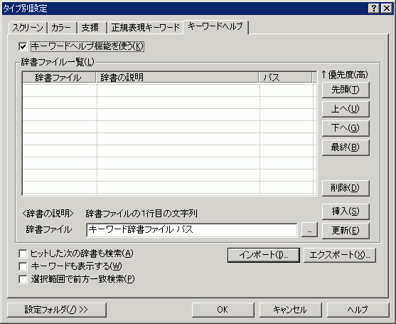

タイプ別設定 『キーワードヘルプ』プロパティ
『スクリーン』 『カラー』 『ウィンドウ』 『支援』 『正規表現キーワード』 『キーワードヘルプ』

□[キーワードヘルプ機能を使う]チェックボックス
キーワードヘルプ機能を有効にします。
<辞書ファイル一覧>
[辞書ファイル]リスト
登録されている辞書ファイルのリストです。
リストの上位にあるキーワードほど検索の優先順位が高くなります。
[辞書の説明]リスト
辞書ファイルの1行目が表示されます。
[パス]リスト
辞書ファイル名を表示します。
[辞書ファイル]
挿入したい辞書ファイルを指定します。
フルパスまたは設定フォルダからの相対パスです。
[インポート], [エクスポート]ボタン
キーワードヘルプ設定のインポート/エクスポートができます。
どの辞書をどの順番で設定したかを記録するもので、キーワードそのものを記録する機能ではありません。
エクスポートしたキーワードヘルプ設定ファイルは、後でインポートしたいときに使います。
[挿入], [更新], [削除]ボタン
辞書ファイルを登録したり削除したりします。
「挿入」は、辞書ファイルをリストのカーソル位置に挿入します。
挿入したい位置をリストで選択してから辞書ファイルのパスを入力し、挿入ボタンを押します。
「更新」は、辞書ファイルに入力したファイルパスでリストのカーソル位置の情報を更新します。
更新したい位置をリストで選択してから辞書ファイルのパスを入力し、更新ボタンを押します。
「削除」は、リストのカーソル位置の情報を削除します。
[先頭], [最終], [上へ], [下へ]ボタン
リストの登録されているカーソル位置の辞書ファイルを移動します。
□[ヒットした次の辞書も検索]チェックボックス
複数の辞書ファイルを検索します
□[キーワードも表示する]チェックボックス
検索したキーワードも表示します。
□[選択範囲で前方一致検索]チェックボックス
選択範囲のキーワードで前方一致検索します。
[設定フォルダ]
設定フォルダボタンは、ユーザー別設定を行っている場合のみ表示されます。